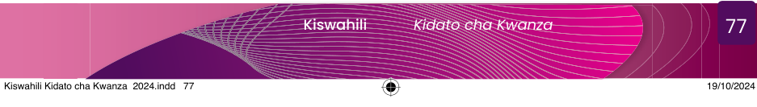

Zoezi la marudio la 7
Orodha A |
Orodha B |
|---|---|
|
(i) Hutumika kuonesha maelezo ya ziada au ufafanuzi wa maneno
(ii) Hutumika kuuliza swali
(iii) Hutumika kuonesha mwisho wa sentensi
(iv) Hutumika kuonesha hisia za mzungumzaji
(v) Hutumika kuonesha maneno halisi ya mzungumzaji
|
A. mkato
B. nukta
C. alama ya mshangao
D. nuktamkato
E. kiulizo
F. alama za mtajo
G. mabano
|
kubo ni mwanafunzi wa kidato cha kwanza anayependa sana kujisomea hujisomea masomo yote ili aweze kupata maarifa ujuzi na umahiri wakati wa vipindi darasani hutulia kumsikiliza mwalimu mwalimu asipokuwepo hutumia muda huo kujisomea Siku moja wakati wa somo la Kiswahili alichaguliwa kusoma insha alisoma vizuri sana sisi sote pia tulisoma vizuri kwa sababu tunapenda kusoma pia mwalimu alituambia jipongezeni tukajipongeza kwa makofi paa paa paa ilipofika wakati wa somo la kiingereza kubo alijibu maswali mengi kuliko sisi mwalimu alimpongeza sana kubo alisema kuwa wote tuige mfano wa kubo kwa sababu ni muhimu kuelewa vizuri kila somo tangu siku hiyo wanafunzi wote tulianza kujisomea darasani kama kubo ili tuweze kufanya vizuri katika masomo yote tuling’amua kwamba hii itatusaidia kupata elimu itakayotuwezesha kukabiliana na mazingira ya kila siku
